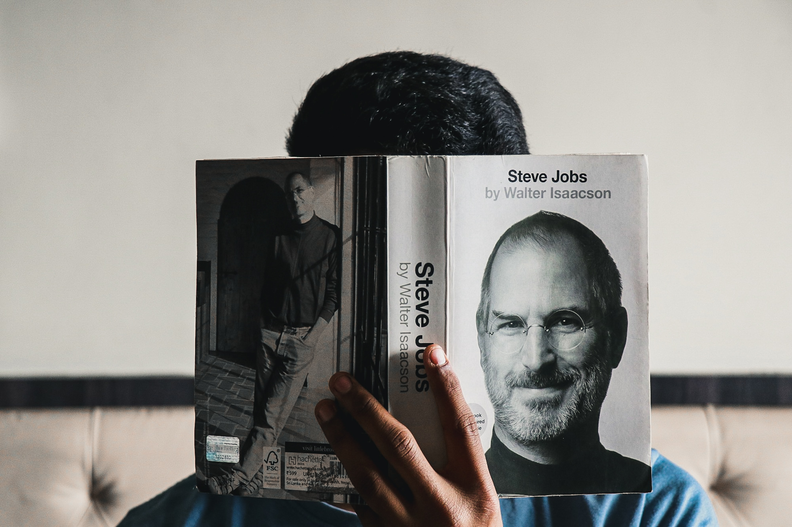

The man who made us dream

The amazing life of Jobs in one picture
Here's a brief timeline of the amazing journey of Steve Jobs:
- 1955 - Born in San Francisco, US and adopted by Paul and Clara
- 1967 - Moved to Crist Drive in Los Altos, California at the age of 12 and changed elementary school in the process
- 1968 - At the age of 13, Jobs was offered a summer job by Bill Hewlett (of Hewlett-Packard) after Jobs cold-called him to ask for parts for an electronics project
- Jobs attended Homestead High School, which had strong ties to Silicon Valley and developed two different interests: electronics and literature during his last two years in the school. His best friends at this point were Wozniak and his first girlfriend, the artistic Homestead junior Chrisann Brennan
- 1972 - Attended Reed College in 1972 before dropping out that same year
- 1974 - Travelled through India seeking enlightenment and studying Zen Buddhism
- 1976 - Co-founded Apple with his best friend Steve Wozniak to sell the Apple I personal computer. Together the duo gained fame and wealth a year later with the Apple II, one of the first highly successful mass-produced microcomputers
- 1983 - Developed the Apple Lisa from the Xerox Altos of 1979 which was mouse driven but proved unsuccessfully in the market though
- 1984 - Had a breakthrough with the Apple macintosh, the first mass-produced computer with a GUI
- 1985 - The Macintosh introduced the desktop publishing industry in with the addition of the Apple LaserWriter, the first laser printer to feature vector graphics
- 1985 - Forced out of Apple after a long power struggle with the company's board and its then-CEO John Sculley
- 1985 - Founded NeXT, a computer platform development company that specialized in computers for higher-education and business markets
- 1986 - Helped to develop the visual effects industry when he funded the computer graphics division of George Lucas's Lucasfilm known as Pixar
- 1995 - Pixar produced the first 3D computer animated feature film known as Toy Story, which went on to become a major animation studio, producing over 20 films as at then
- 1997 - Returned as CEO of Apple after Apple's acquisition of NeXT
- 1997 - Started the "Think different" advertising campaign thereby leading to the iMac, iTunes, iTunes Store, Apple Store, iPod, iPhone, App Store, and the iPad, saving Apple from the verge of bankuptcy
- 2001 - The original Mac OS was replaced with the completely new Mac OS X (now known as macOS), based on NeXT's NeXTSTEP platform, giving the OS a modern Unix-based foundation for the first time.
“Steve Jobs was a true American business magnate, industrial designer, investor, and media proprietor. He was widely recognized as a pioneer of the personal computer revolution of the 1970s and 1980s, along with Apple co-founder Steve Wozniak.”
If you have time, you should read more about this incredible human being on his wikipedia entry